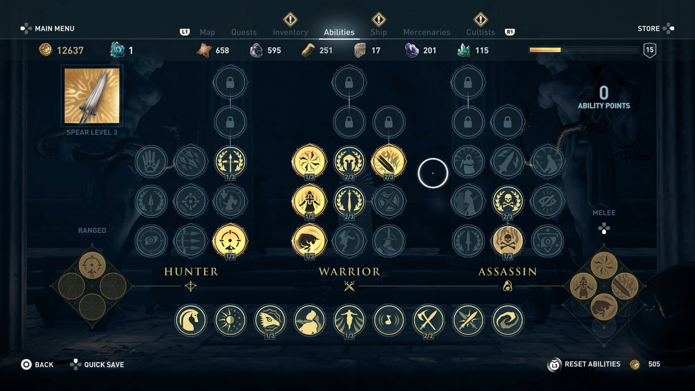

The Assassin's Creed Odyssey Walkthrough is complete with a written step-by-step guide, screenshots, and a video guide for every main quest. Killing members of the Cult of Kosmos will land you Legendary Gear and shards of the Spear. Upgrading your spear to level 5 unlocks more Abilities. Here's every location of every Cult Member and how to kill them. The two main Characters in Assassin's Creed Odyssey, Kassandra and Alexios, don't change the story no matter which one you choose. Check out the Characters page for more info. The Abilities guide details every ability in Assassin's Creed Odyssey complete with tips and what abilities to get first. |
| Abilities, or skills, in Assassin's Creed: Odyssey are unlocked by leveling up your character, and by upgrading the Spear of Leonidas. Here, you'll find every skill available and they're descriptions, tips, and how to combo a skills together for maximum effect. Please read the Basics section to understand how Abilities are upgraded before moving on to the trees. |
|  |
|